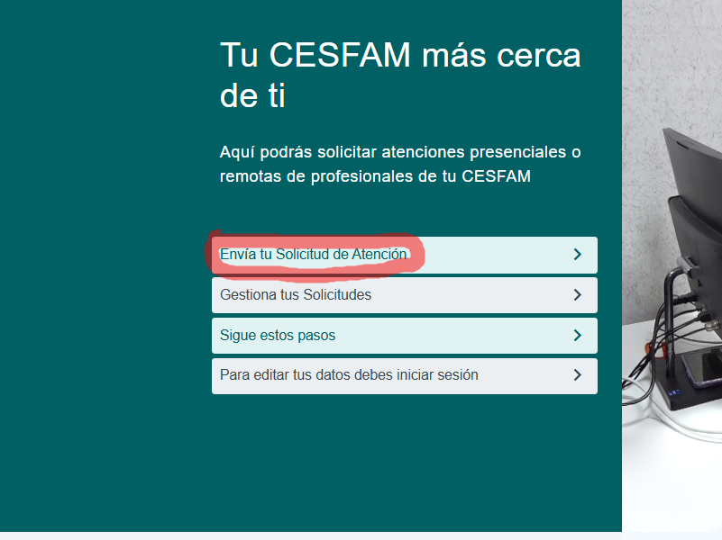
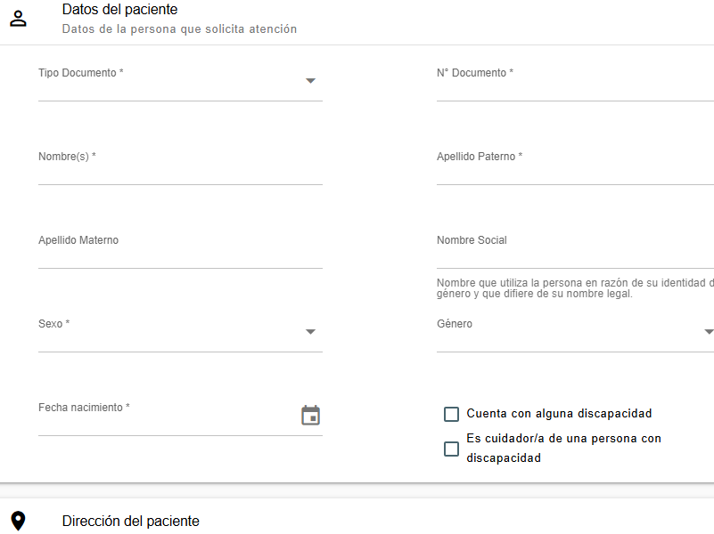
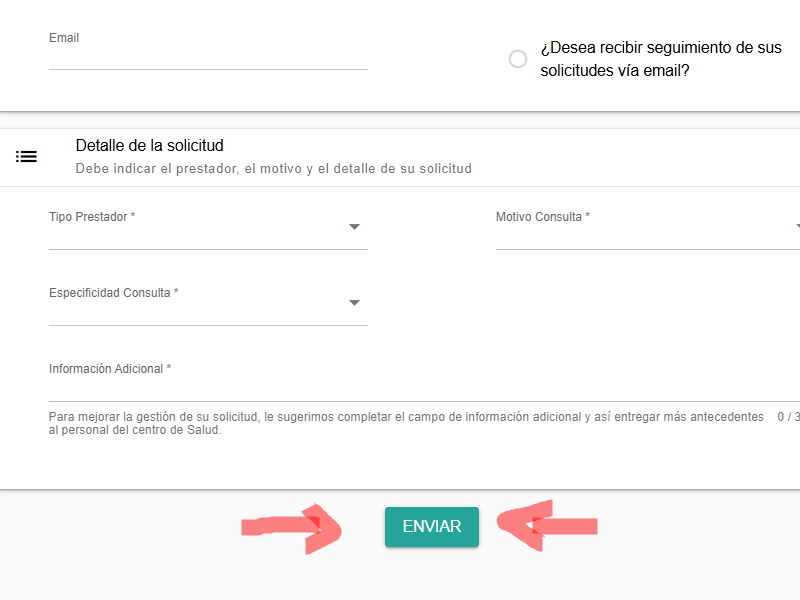
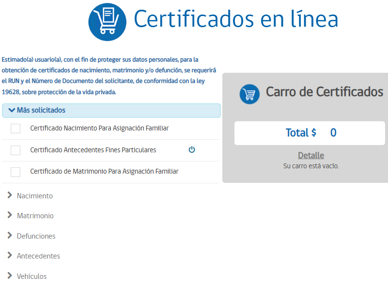
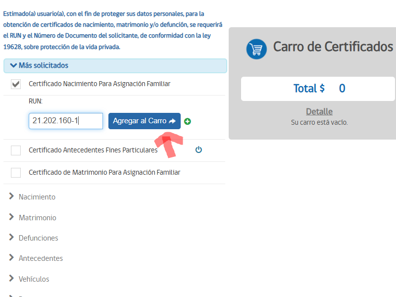
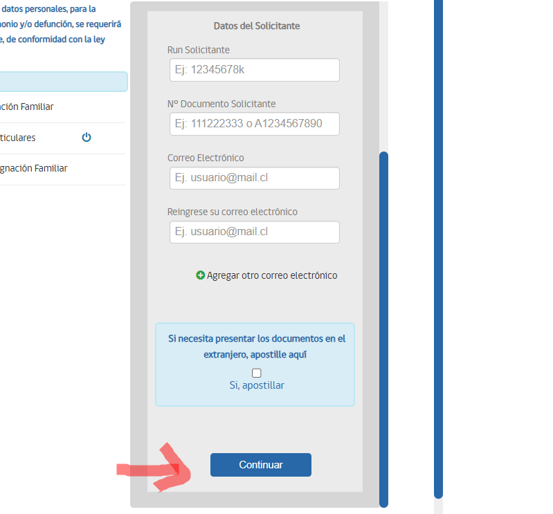
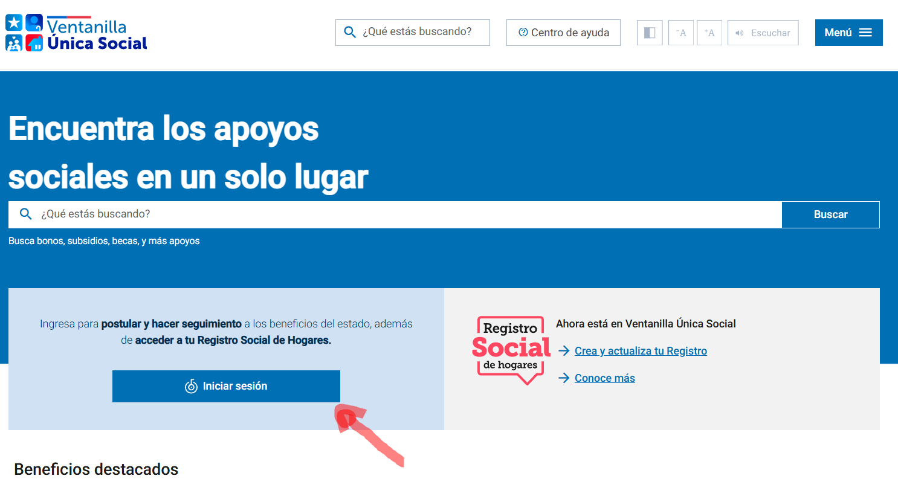
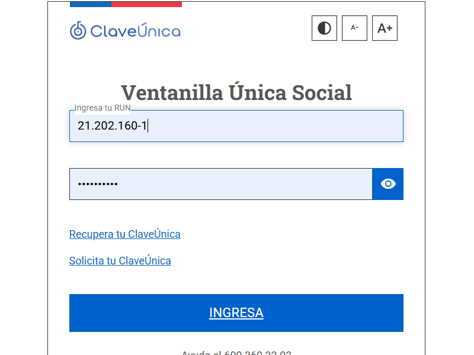
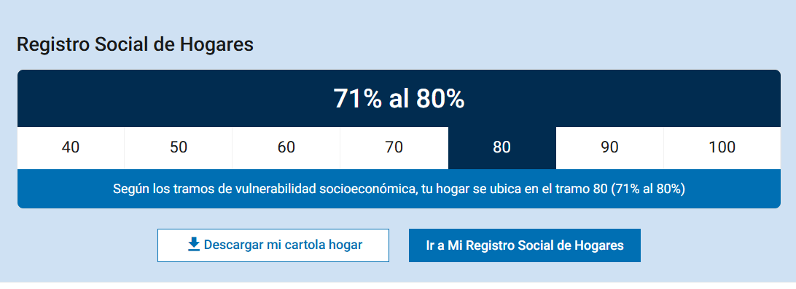
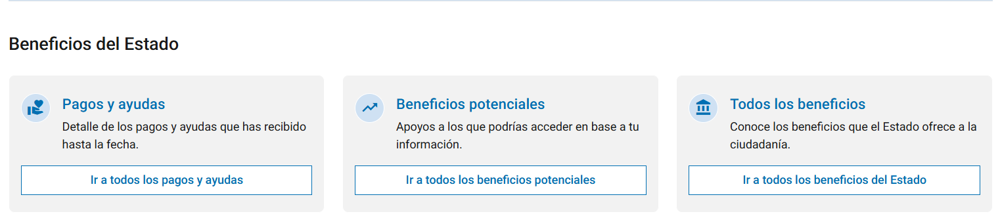

Guías para Trámites Digitales
Aquí encontrarás tutoriales paso a paso para realizar tus trámites más comunes de forma segura y sencilla desde tu dispositivo.
1. Sacar hora en el consultorio o CESFAM
Aprende a agendar tu cita médica de forma online, sin filas ni esperas.
- Paso 1: Accede al portal de Telesalud ingresando a https://telesalud.gob.cl/. Una vez allí, verás un sitio sencillo donde puedes comenzar tu solicitud de atención médica en línea.
-
Paso 2: Busca la opción que dice "Envía tu Solicitud de Atención". Esta sección te permitirá iniciar el proceso de reserva de hora médica.

-
Paso 3: Completa cuidadosamente el formulario con los datos del paciente. Asegúrate de incluir el nombre completo, la dirección actual del paciente y el centro de salud más cercano a su domicilio.

-
Paso 4: Una vez completado el formulario, baja hasta el final y haz clic en el botón "Enviar" para finalizar tu solicitud de atención. Este paso es necesario para que el sistema procese tu requerimiento.

2. Ver y descargar bonos Fonasa
Aprende a consultar y obtener tus bonos de atención de salud Fonasa de manera digital.
- Paso 1: Ingresa al sitio oficial de Fonasa desde cualquier navegador web. La dirección es Fonasa.cl. Asegúrate de estar en un entorno seguro para ingresar tus datos.
- Paso 2: Haz clic en el botón "Clave Única" para iniciar sesión. Este método te permitirá ingresar de forma segura y personalizada a tus beneficios de salud.
- Paso 3: Una vez dentro, selecciona la opción "Compra Bono". Luego elige el nombre del beneficiario al que deseas asignar el bono.
- Paso 4: En la lista de opciones, selecciona "Comprar Bono Prestaciones de Salud" para continuar con el proceso.
- Paso 5: Rellena todos los campos del formulario con los datos personales necesarios y selecciona el profesional de salud al que deseas asistir.
- Paso 6: Revisa que todos los datos estén correctos y confirma la compra del bono. Luego podrás elegir el método de pago que prefieras.
A continuación se muestra un video que explica los pasos:
3. Pedir certificado de nacimiento en el Registro Civil
Consigue tu certificado de nacimiento de forma online y sin costo.
- Paso 1: Ingresa al sitio oficial del Registro Civil para servicios en línea. Puedes hacerlo accediendo a registrocivil.cl/principal/servicios-en-linea. Aquí encontrarás todas las opciones disponibles para tramitar documentos.
-
Paso 2: Explora la lista de certificados disponibles y selecciona el que deseas solicitar, como por ejemplo el certificado de nacimiento. Esta lista te permitirá elegir el documento correcto según tu necesidad.

-
Paso 3: Introduce tu RUT en el campo correspondiente y presiona el botón “Agregar al carro”. Esto te permitirá incluir el certificado seleccionado para su trámite y posterior descarga.

-
Paso 4: Completa los datos personales solicitados con atención, asegurándote que toda la información sea correcta para evitar problemas posteriores. Luego, haz clic en el botón “Continuar” para avanzar al siguiente paso.

- Paso 5: Finalmente, revisa tu correo electrónico. El certificado solicitado llegará a la dirección que proporcionaste, listo para descargar o imprimir según necesites.
4. Ver porcentaje del Registro Social de Hogares y beneficios del Estado
Consulta tu cartola del Registro Social de Hogares y accede a múltiples beneficios estatales desde un solo lugar.
-
Paso 1: Dirígete al sitio oficial de la Ventanilla Única Social ingresando a www.ventanillaunicasocial.gob.cl. Este portal te permitirá consultar tu información social en un solo lugar.

-
Paso 2: Haz clic en “Iniciar sesión” y autentícate utilizando tu RUT y Clave Única. Esto garantiza que sólo tú tengas acceso a tu información personal.

-
Paso 3: Una vez dentro, podrás ver en pantalla tu porcentaje actualizado del Registro Social de Hogares, información clave para acceder a diversos beneficios.

-
Paso 4: En la parte inferior de la página encontrarás botones para acceder a diferentes beneficios estatales disponibles para ti, facilitando la gestión de tus trámites sociales.

5. Pedir hora para renovar cédula de identidad
Agenda tu cita para renovar tu cédula de identidad de forma rápida y sencilla a través del portal oficial.
- Paso 1: Ingresa al sitio oficial del Registro Civil destinado a la solicitud de horas para cédula de identidad, disponible en solicitudeswebrc.srcei.cl.
- Paso 2: Lee cuidadosamente los términos y condiciones que aparecen en pantalla, acepta las condiciones para continuar y presiona el botón “Enviar” para avanzar.
- Paso 3: Autentícate ingresando tu RUT y Clave Única. Esta validación es necesaria para garantizar la seguridad de tus datos.
- Paso 4: Completa el formulario con tus datos personales y, una vez revisados, haz clic en continuar para concretar la solicitud de hora. Paso 4: Rellena tus datos personales y presiona continuar.
A continuación se muestra un video tutorial con los pasos: